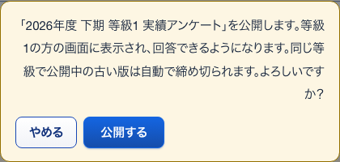
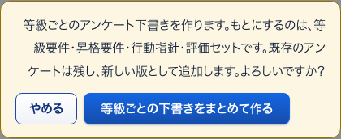
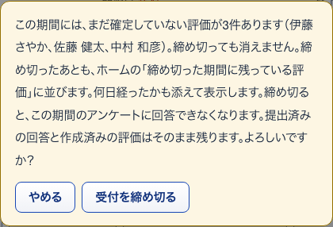
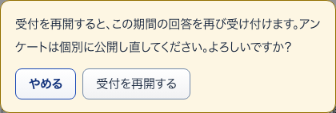

15所属の説明開いて見る
S26 本人が変更できる項目 ・ 押すもの: 「所属」
中に出るもの
- いま所属している部署・チームです。異動したら変えます。
16社員番号の説明開いて見る
S26 本人が変更できる項目 ・ 押すもの: 「社員番号」
中に出るもの
- 給与・勤怠と突き合わせるための番号です。会社が採番します。
22公開する確かめる小窓
S28 アンケート ・ 押すもの: 「公開する」 ・ 閉じる: やめる

中に出るもの
- 「（題名）」を公開します。
- その等級の方の画面に表示され、回答できるようになります。
- 同じ等級で公開中の古い版は自動で締め切られます。
中で押せるもの
- 公開する: 受付を始める
- やめる: 小窓を閉じる
17入社日の説明開いて見る
S26 本人が変更できる項目 ・ 押すもの: 「入社日」
中に出るもの
- 在籍年数の計算に使います。評価の対象期間の判定にも関わります。
18切り替えの知らせ押したあとに出る
S26 本人が変更できる項目 ・ 押すもの: 「本人も」 ・ 押すと保存や送信が起きるので、写真は載せていない
中に出るもの
- 本人も変更できるようになりました。（会社の管理者のみ を押すと「会社の管理者だけが変更できるようになりました。」）
21まとめて下書きを作る確かめる小窓
S28 アンケート ・ 押すもの: 「等級ごとの下書きをまとめて作る」 ・ 閉じる: やめる

中に出るもの
- 等級ごとのアンケート下書きを作ります。
- もとにするのは、等級要件・昇格要件・行動指針・評価セットです。
- 既存のアンケートは残し、新しい版として追加します。
中で押せるもの
- 等級ごとの下書きをまとめて作る: 下書きを作る
- やめる: 小窓を閉じる
19受付を締め切る確かめる小窓
S27 評価期間 ・ 押すもの: 「受付を締め切る」 ・ 閉じる: やめる

中に出るもの
- 未確定の評価の件数と名前（3人まで）
- 締め切ると、この期間のアンケートに回答できなくなります。
- 提出済みの回答と作成済みの評価はそのまま残ります。
中で押せるもの
- 受付を締め切る: その期間の受付を止める
- やめる: 小窓を閉じる
20受付を再開する確かめる小窓
S27 評価期間 ・ 押すもの: 「受付を再開する」 ・ 閉じる: やめる

中に出るもの
- 受付を再開すると、この期間の回答を再び受け付けます。
- アンケートは個別に公開し直してください。
中で押せるもの
- 受付を再開する: 受付を開き直す
- やめる: 小窓を閉じる